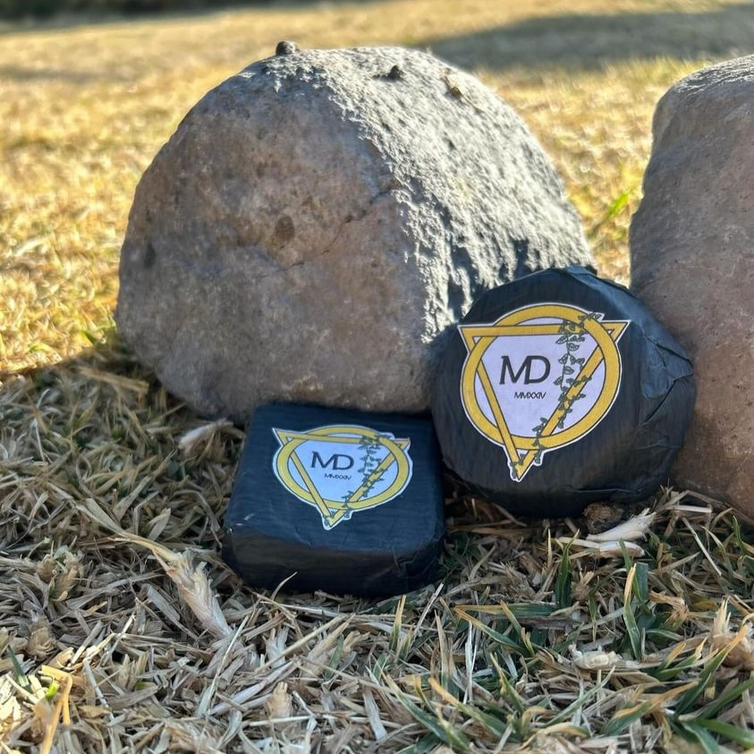
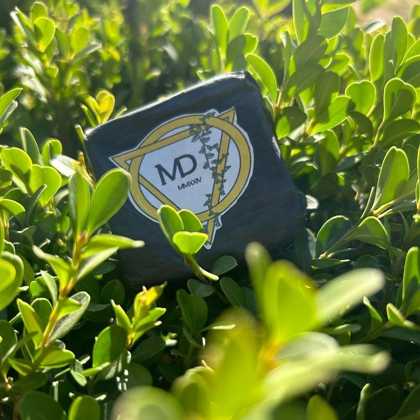

¿Qué es un Jabón?
Es un Producto soluble en agua resultado de la combinación de un álcali con los ácidos del aceite u otro cuerpo
graso, que se usa generalmente para lavar, ello depende del propósito con el cual haya sido creado.
INGREDIENTES
Los ingredientes de nuestro jabón son tanto plantas endémicas como frutas comúnes en el globo. Dado ello
aquí un listado:
Glicerina (Obtenida mediante el proceso de saponificación)
Esencia de Cempasúchitl
Esencia de Mercadela
Esencia de Vainilla
Esencia de Coco
Esencia de Piña

¿Cuáles son los beneficios de nuestros productos? 
Aunque no descartamos la idea de que puedan tener algún uso en cuanto a salud respecta, los mismos fueron creados
para tener propiedades cosméticas, las principales y fundamentales son: Suavidad en la piel y un buen olor.
Estos propósitos nos guiaron a modo de conocer nuestras prioridades al momento de realizar el producto.
¿Cuáles son los costos?
Nuestros productos dadas sus diferencias, constan de precios que difieren, a continuación, una contextualización
detallada:
• Versión Normal: esta modalidad contiene 45gr de producto, contiene la
mayoría de esencias ya mencionadas, excluyendo la de Cempasuchitl. El precio
es de $50 pesos.
• Versión Premium: esta modalidad contiene 65gr de producto, tiene
todas las esencias ya mencionadas, El precio es de $70 pesos.